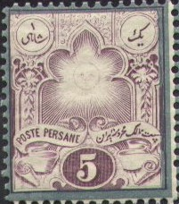
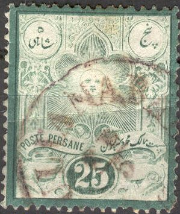
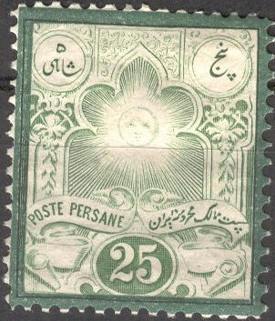
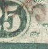
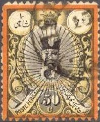
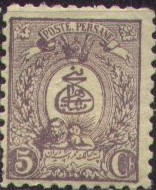
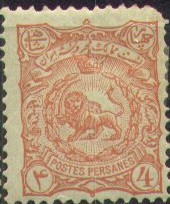
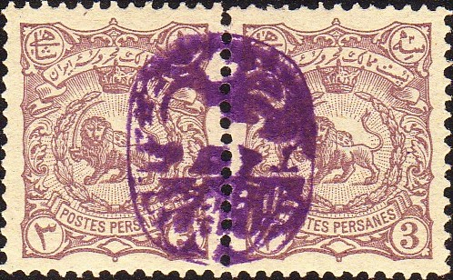

{kind=link}

(Genuine overprint)
Return To Catalogue - Persia (Iran) 1870-1880 - 1894-1920 issues
Note: on my website many of the
pictures can not be seen! They are of course present in the
catalogue;
contact me if you want to purchase the catalogue.
More information about stamps from Persia, forgeries etc. can be found on: http://www.persi.com/fakes/fakes/fake.html or http://www.iranphilatelic.org/scams.htm.
For stamps of Persia, issued from 1870 to 1880 click here.

5 c(ents) lilac 5 c(ents) lilac (border blue) 5 c(hahis) green 10 c(ents) red 10 c(ents) red (border red) 25 c(ents) green 25 c(ents) green (border green) Overprinted "OFFICIEL" and value
(Genuine overprint)
(Reduced size)
3 on 5 c green (1887) 6 on 5 c green (1886)
The overprint 'OFFICIEL' did not mean that these stamps are official stamps, but that the surcharge was genuine (in contrast to some bogus overprints, which seem to have appeared at that time).
Overprinted with slanting "Officiel" and surcharged with new value

6 on 5 c green 12 on 10 c red
Value of the stamps |
|||
vc = very common c = common * = not so common ** = uncommon |
*** = very uncommon R = rare RR = very rare RRR = extremely rare |
||
| Value | Unused | Used | Remarks |
| Without coloured border | |||
| 5 c lilac | ** | * | |
| 5 c green | * | vc | |
| 10 c | * | * | |
| 25 c | RR | *** | |
| With differently coloured border | |||
| 5 c | * | * | |
| 10 c | * | * | |
| 25 c | ** | * | |
| Reprints | vc | - | |
Overprinted "OFFICIEL" |
|||
| 3 on 5 c | * | * | |
| 6 on 5 c | * | * | |
Forgeries exist, they resemble very closely the genuine stamps. 95 to 99% of these stamps seem to be forgeries! The forgeries were produced for a Paris stamp dealer (Source: http://www.richnoddystamps.co.uk/forgeries-reprints/forgery-of-the-week-persia-1881-dual-currency-recess-printed/). For more information see http://www.iranphilatelic.org/scams.htm. Focus on Forgeries by V.E.Tyler says that the printing plates of these stamps fell into the wrong hands, after being retouched slightly an enormous amount of reprints appeared on the market....
 
(On the left genuine I presume, right forgery)
(Left genuine, rigth forgery; line between two vertical lines is
blur in genuine stamps)

According to http://bigblue1840-1940.blogspot.sg/2013/01/StampForgeriesofIranPersia.html, the 'line' difference also applies to other forgeries of this set.

50 c(ents) black, yellow and orange 1 F black, light blue and dark blue 5 F black, light red and dark red 10 F black, yellow and red (larger size) 1882
10 c(hahis) black, yellow and orange 50 c(hahis) black and grey Overprinted 'OFFICIEL' and surcharged with value

6 on 10 c black, yellow and orange (1887) 8 on 50 c black and grey (1887) 12 on 50 c black and grey (1886) 18 on 10 c black, yellow and orange (1886) 1 T on 5 F black, light red and dark red
Value of the stamps |
|||
vc = very common c = common * = not so common ** = uncommon |
*** = very uncommon R = rare RR = very rare RRR = extremely rare |
||
| Value | Unused | Used | Remarks |
Values in "Centimes" or "Francs" |
|||
| 50 c | *** | * | |
| 1 F | * | * | |
| 5 F | * | * | |
| 10 F | ** | * | |
| Values in "Chahis" | |||
| 10 ch | * | * | |
| 50 ch | ** | ** | |
Surcharged |
|||
| 6 on 10 ch | * | * | |
| 8 on 50 ch | *** | *** | |
| 12 on 50 ch | * | * | |
| 18 on 10 ch | * | * | |
| 1 T on 5 F | *** | ** | |
Bogus isssues:

The 50 c and 1 F exist with a 'sun' overprint, they are bogus issues. Also all overprints not listed above are bogus issues. The 50 c, 1 F and 10 F also exist bisected together with a bogus surcharge (hardly visible in the above stamp!).
Other highly dubious bisected stamps
If my information is correct, these bisects were produced by the postmaster, the Austrian Alexander Friedrich Stahl. Stahl lost his job and his 'bisects' were sold by the Austrian stamp dealer Sigmund Friedl.
Forgeries:


In the above two stamps the inscription 'FALSCH' (=forgery, in German) is added in the bottom part of the stamp. The second mage was obtained with permission from the Forgeries idenfication site of Bill Claghorn: http://geocities.com/claghorn1p/. I think they were produced by Senf.

Other forgery of the 10 F value, there are many differences in
the design and lettering.


Possibly other forgeries of the 5 F and 10 F values

Fournier forgeries as they can be found in the Fournier Album,
here printed together with some forgeries of Afghanistan.
1 ch green 2 ch red 5 ch blue
Value of the stamps |
|||
vc = very common c = common * = not so common ** = uncommon |
*** = very uncommon R = rare RR = very rare RRR = extremely rare |
||
| Value | Unused | Used | Remarks |
| 1 ch | * | * | |
| 2 ch | * | * | |
| 5 ch | * | c | |

10 ch brown 1 K grey 5 K lilac
Value of the stamps |
|||
vc = very common c = common * = not so common ** = uncommon |
*** = very uncommon R = rare RR = very rare RRR = extremely rare |
||
| Value | Unused | Used | Remarks |
| 10 ch | * | * | |
| 1 K | * | * | |
| 5 K | ** | * | |

1 ch red 2 ch blue 5 ch lilac 7 ch brown
Value of the stamps |
|||
vc = very common c = common * = not so common ** = uncommon |
*** = very uncommon R = rare RR = very rare RRR = extremely rare |
||
| Value | Unused | Used | Remarks |
| 1 ch | vc | vc | |
| 2 ch | vc | vc | |
| 5 ch | vc | vc | |
| 7 ch | c | c | |
10 ch black 1 Kr red 2 Kr red 5 Kr green
Value of the stamps |
|||
vc = very common c = common * = not so common ** = uncommon |
*** = very uncommon R = rare RR = very rare RRR = extremely rare |
||
| Value | Unused | Used | Remarks |
| 10 ch | vc | vc | |
| 1 K | c | vc | |
| 2 K | c | c | |
| 5 K | c | c | |
1 ch black 2 ch brown 5 ch blue 7 ch grey 10 ch red 14 ch orange
Value of the stamps |
|||
vc = very common c = common * = not so common ** = uncommon |
*** = very uncommon R = rare RR = very rare RRR = extremely rare |
||
| Value | Unused | Used | Remarks |
| 1 ch | vc | vc | |
| 2 ch | vc | vc | |
| 5 ch | vc | vc | |
| 7 ch | * | * | |
| 10 ch | vc | vc | |
| 14 ch | c | c | |
1 Kr green 2 Kr orange 5 Kr yellow
Value of the stamps |
|||
vc = very common c = common * = not so common ** = uncommon |
*** = very uncommon R = rare RR = very rare RRR = extremely rare |
||
| Value | Unused | Used | Remarks |
| 1 K | c | vc | |
| 2 K | * | c | |
| 5 K | c | c | |

1 ch violet 1 ch grey (1898) 1 ch grey on green (1900) 2 ch green 2 ch brown (1898) 2 ch brown on green (1900) 3 ch lilac (1898) 3 ch lilac on green (1900) 4 ch red (1898) 4 ch red on green (1900) 5 ch blue 5 ch yellow (1898) 5 ch yellow on green (1900) 8 ch brown 8 ch orange (1898) 8 ch orange on green (1900) 10 ch blue (1898) 10 ch blue on green (1900) 12 ch red (1898) 12 ch red on green (1900) 16 ch green (1898) 16 ch green on green (1900)
(With security overprints)
The 8 different security overprints that were employed on the
1898 issue in 1899.
The stamps of the 1898 issue exists with a security overprint in violet (1899). The stamps of the 1900 issue exists with overprint 'PROVISOIRE' (1902):

(With 'PROVISOIRE' overprint)
In 1900 a violet control mark was applied. Each control mark covered 2 or 4 stamps.

1900: With violet control mark (genuine).

With control mark on two stamps.
With 'PROVISOIRE' and control mark overprints
Security overprint and control mark
Surcharged


'5 Ch' (in rectangle violet, 1897) on 8 ch brown '5' and arabic text (violet, 1900) on 8 ch brown '5 CHAHIS' (violet, 1902) on 10 ch blue
With surcharge '5' and 'PROVISOIRE' overprint
Value of the stamps |
|||
vc = very common c = common * = not so common ** = uncommon |
*** = very uncommon R = rare RR = very rare RRR = extremely rare |
||
| Value | Unused | Used | Remarks |
| All values | vc to * | vc to * | |
For 1894-1920 issues and miscellaneous click here.
{kind=link}
{kind=link}
{kind=link}